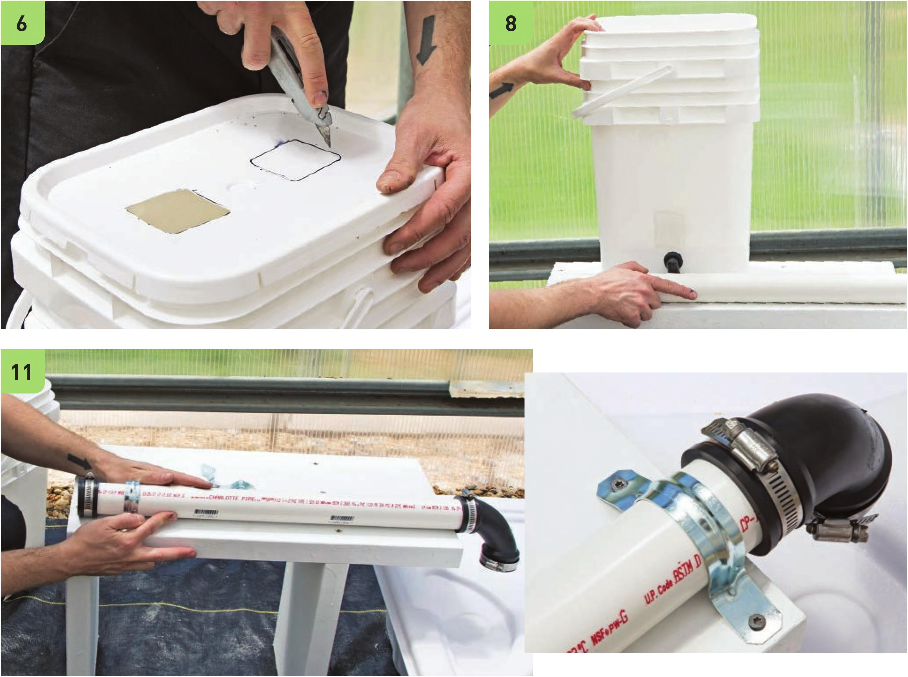

6 Keeping the Lid of the top bucket is optional. A lid on the top bucket can help reduce algae buildup. Create holes in the lid larger than the size of the transplants. Most Dutch buckets are capable of growing at least two plants. Assemble the Irrigation System This irrigation design can be modified to add more buckets to the garden. To expand this garden, increase the length of the frame, the IV2" PVC line, and the 3A" vinyl tubing, and add additional W lines coming off the W vinyltubing forthe additional buckets. 7 Cut the PVC into a 25" segment and a 10" segment. 8 Check the positioning of the bucket and PVC pipe. There should be enough space on either side of the PVC pipe to fasten an EMT strap. 9 Captheendof the 25" PVC pipe with the 1 V2" rubber cap. Tighten the clamp on the cap. 10 Attach the 1 V2" rubber elbow to the other end of the 2'1" PVC pipe. 11 Fasten the 25" PVC pipe to the frame with the two IV2" EMT straps. HYDROPONIC GROWING SYSTEMS 87
